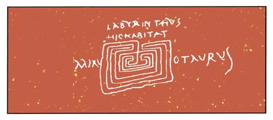
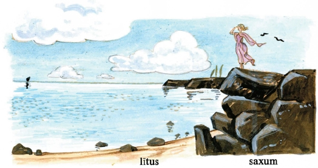

THESEVS ET MINOTAVRVS
I
Syra, postquam facta Mārcī nārrāvit, abīre vult, sed Quīntus “Nōlī,” inquit, “mē relinquere! Tē hīc manēre volō. Nārrā mihi aliquam fābulam!”
Syra: “Quam fābulam mē tibi nārrāre vīs? Fābulam dē lupō et agnō quī forte ad eundem rīvum vēnērunt? an fābulam dē puerō quī cupīvit regere equōs quī currum Sōlis per caelum trahunt?”
Tacente Quīntō, Syra pergit: “An cupis audīre fābulam dē Achille, duce Graecōrum, quī Hectorem, ducem Trōiānum, interfēcit atque corpus eius mortuum post currum suum trāxit circum moenia urbis Trōiae? an fābulam dē Rōmulō, quī prīma moenia Rōmāna aedificāvit...”
Quīntus: “...et Remum frātrem interfēcit quia moenia humilia dērīdēbat! Omnēs istās fābulās antīquās saepe audīvī. Iam vērō nec dē hominibus nec dē bēstiīs audīre cupiō. Nārrā mihi fābulam dē aliquō ferōcī mōnstrō, cui caput bēstiae et corpus hominis est et quod hominēs vīvōs vorat! Tālem fābulam audīre cupiō.”
Syra: “At tāle mōnstrum tē terrēbit, Quīnte.”
Quīntus: “Nōlī putāre mē puerum timidum esse! Timor mōnstrōrum puerum Rōmānum nōn decet!”
“Nārrābō tibi fābulam dē Thēseō et Mīnōtaurō,” inquit Syra, et sīc nārrāre incipit:
“In īnsulā Crētā ōlim vīvēbat mōnstrum terribile, nōmine Mīnōtaurus, cui caput taurī, corpus virī erat. Mīnōtaurus in magnō labyrinthō habitābat.”

Quīntus: “Quid est labyrinthus?”
Syra: “Est magnum aedificium quod frequentibus mūrīs in plūrimās partēs dīviditur. Nēmō quī tāle aedificium semel intrāvit rūrsus illinc exīre potest, etsī iānua patet. Labyrinthus ille in quō Mīnōtaurus inclūsus tenēbātur, ā Daedalō, virō Athēniēnsī, aedificātus erat. Quī iam antequam ex urbe Athēnīs in Crētam vēnit, complūrēs rēs mīrābilēs fēcerat.
“Mīnōtaurus nihil praeter hominēs vīvōs edēbat. Itaque complūrēs adulēscentēs virginēsque quotannīs Athēnīs in Crētam mittēbantur, quī omnēs in labyrinthō ā mōnstrō illō saevō vorābantur. Nāvis quā Athēniēnsēs illūc vehēbantur vēla ātra gerēbat, nam eō colōre significātur mors.”
II
Quīntus: “Quam ob rem tot Athēniēnsēs ad mortem certam mittēbantur?”
Syra: “Rēx Mīnōs, quī tunc Crētam regēbat, paucīs annīs ante urbem Athēnās bellō expugnāverat. Post expugnātiōnem urbis Mīnōs, cupidus aurī atque sanguinis, nōn modo magnam pecūniam, sed etiam hominēs vīvōs ab Athēniēnsibus postulāverat. Rēx enim Athēniēnsibus male volēbat, quod fīlius eius paulō ante ab iīs necātus erat.
“Eō tempore Thēseus, vir patriae amāns atque glōriae cupidus, Athēnīs vīvēbat. Quī nūper Athēnās vēnerat neque ibi fuerat cum urbs ā rēge Mīnōe expugnāta est. Thēseus, quī patrem Mīnōtaurī, taurum album, iam necāverat, novam glōriam quaerēns Mīnōtaurum ipsum quoque interficere cōnstituit. Itaque ūnā cum cēterīs Athēniēnsibus nāvem vēlīs ātrīs ōrnātam cōnscendit et in Crētam profectus est. Ibi continuō rēgem Mīnōem adiit, quī eum ā mīlitibus in labyrinthum dūcī iussit.
“Mīnōs autem fīliam virginem habēbat, cui nōmen erat Ariadna. Quae cum prīmum Thēseum cōnspexit, eum amāre coepit cōnstituitque eum servāre.
“Ariadna igitur, antequam Thēseus labyrinthum intrāvit, ad eum accessit et sīc loquī coepit: ‘Contrā Mīnōtaurum ego tibi auxilium ferre nōn possum...’ ‘Deī,’ inquit Thēseus, ‘mihi auxilium ferent contrā illum. Hodiē certē Mīnōtaurum occīdam atque cīvēs meōs ā mōnstrō illō terribilī servābō. Bonum gladium gerō. Ad pugnam parātus sum.’ Tum Ariadna ‘Hoc nōn dubitō,’ inquit, ‘sed quōmodo exitum labyrinthī posteā reperiēs? Nēmō adhūc per sē viam ē labyrinthō ferentem repperit. Ego vērō tibi auxilium feram: ecce fīlum ā Daedalō factum quod tibi viam mōnstrābit. Auxiliō huius fīlī hūc ad mē redībis.’ Haec locūta, Ariadna Thēseō fīlum longum dedit; atque ille ‘Opperīre mē,’ inquit, ‘hīc ad iānuam! Nōlī timēre! Ego mortem nōn timeō. Sine timōre mortis contrā hostem eō. Brevī hūc redībō, neque sine tē, Ariadna, in patriam revertar. Illūc tē mēcum dūcam neque umquam tē relinquam. Hoc tibi polliceor.’
“Tum Thēseus, fīlum Ariadnae post sē trahēns, labyrinthum intrāvit ac sine morā Mīnōtaurum in mediō labyrinthō exspectantem petīvit, quem post brevem pugnam gladiō occīdit. Mīnōtaurō occīsō, Thēseus fīlum Ariadnae secūtus exitum labyrinthī facile repperit. Ita Thēseus ob amōrem patriae cīvēs suōs ā mōnstrō saevissimō servāvit.
“Haec sunt quae nārrantur dē nece Mīnōtaurī.”
III
Hīc Quīntus “Perge,” inquit, “nārrāre dē Thēseō et Ariadnā! Nōnne illa Thēseum secūta est?”
Syra: “Thēseus ē labyrinthō exiēns ‘Mīnōtaurus necātus est,’ inquit. ‘Laetāminī, cīvēs meī! Intuēminī gladium meum cruentum! Sequiminī mē ad portum! Ibi nāvis mea parāta est ad nāvigandum.’ Tum Ariadnam cōnspiciēns ‘Et tū,’ inquit, ‘sequere mē! Proficīscere mēcum Athēnās!’ Ariadna, quae nihil magis cupiēbat, ‘Parāta sum ad fugiendum,’ inquit, atque sine morā nāvem Thēseī cōnscendit. Thēseus nāvem solvit et cum fīliā rēgis nāvigāvit Naxum; ibi vērō nocte silentī Ariadnam dormientem relīquit atque ipse Naxō profectus est. Māne Ariadna ē somnō excitāta amīcum in lītore quaesīvit neque eum repperit. Puella misera ab humilī lītore in altum saxum ascendit, unde prōspiciēns nāvem Thēseī procul in marī vīdit. Tum, etsī vōx eius ā nūllō audīrī poterat, Ariadna amīcum suum fugientem vocāvit: ‘Thēseu! Thēseu! Revertere ad mē!’ neque ūllum respōnsum eī redditum est praeter vōcem ipsīus quam dūra saxa reddidērunt.

Brevī nāvis ē cōnspectū eius abiit neque iam ūllam vēlum in marī cernēbātur. Ariadna igitur in lītus dēscendit atque hūc et illūc currēns multīs cum lacrimīs capillum et vestem scindēbat, ut hominēs quī maerent agere solent — ita maerēbat virgō miserrima, quae ā virō quem ante omnēs amābat sōla relicta erat inter ferās īnsulae sīcut agnus timidus inter saevōs lupōs.”
Quīntus: “Cūr Thēseus amīcam suam ita dēseruit?”
Syra: “Tālēs sunt virī, mī puer. Montēs aurī fēminīs pollicentur, tum prōmissa oblīvīscuntur ac fēminās sine nummō dēserunt! Quis tam facile prōmissum oblīvīscitur quam vir quī fēminam amāvit? Ego quoque ōlim dēserta sum ab amīcō pecūniōsō quī mihi magnās rēs pollicitus erat. Nōlī vērō putāre mē ob cupiditātem pecūniae amāvisse eum, ego eum amābam quia eum probum virum esse crēdēbam. Etiam nunc maereō ob amōrem illīus virī.”
Quīntus: “Oblīvīscere illīus virī improbī quī tē tam turpiter dēseruit!”
Syra: “Nōn facile est amōris antīquī oblīvīscī. Sed hoc tū nōndum intellegis, mī Quīnte. Redeō ad nārrātiōnem fābulae, quam prope oblīta sum, dum dē aliīs rēbus loquor.
“Ariadnā Naxī relictā, Thēseus ad patriam suam nāvigābat. Interim pater eius Aegeus, rēx Athēniēnsium, ab altō saxō in mare prōspiciēbat. Brevī nāvis fīliī in cōnspectum vēnit, sed nāvis rediēns eadem vēla ātra gerēbat quae abiēns gesserat: Thēseus enim post necem Mīnōtaurī vēla mūtāre oblītus erat! Itaque Aegeus, arbitrātus mortem fīliī eō colōre significārī, sine morā dē saxō sē iēcit in mare, quod ā nōmine eius etiam nunc ‘mare Aegaeum’ vocātur.
“Post mortem rēgis Aegeī fīlius eius Thēseus rēx Athēniēnsium factus est. Quī multōs annōs Athēnās magnā cum glōriā rēxit.”
Hīs verbīs Syra fīnem nārrātiōnis facit.
* * *
GRAMMATICA LATINA
Verba dēpōnentia. Imperātīvus
Laetā|rī laetā|re! = gaudē! laetā|minī! = gaudēte!
Intuē|rī intuē|re! = spectā! intuē|minī! = spectāte!
Revert|ī revert|ere! = redī! revert|iminī! = redīte!
Partī|rī partī|re! = dīvide! partī|minī! = dīvidite!
‘Laetāre, laetāminī’ et cētera sunt imperātīvī verbōrum dēpōnentium. Imperātīvus verbī dēpōnentis: singulāris -re, plūrālis -minī.
* * *
AD CAPITVLVM